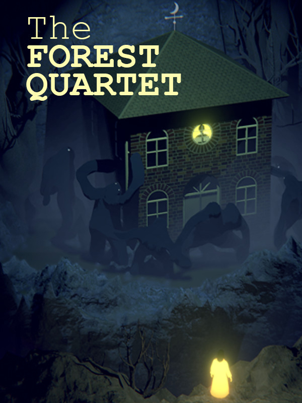

The Forest Quartet
The Forest Quartet
Details
|  | |
| Playtime | Not Played |
| Last Activity | Never |
| Added | 9/29/2023 12:30:41 |
| Modified | 12/22/2023 21:25:03 |
| Completion Status | Not Played |
| Library | Epic |
| Source | Epic |
| Platform | Epic Games |
| Release Date | 12/8/2022 |
| Community Score | |
| Critic Score | |
| User Score | |
| Genre | Adventure Indie |
| Developer | Bedtime Digital Games Mads & Friends |
| Publisher | Bedtime Digital Games Mads & Friends |
| Feature | Single-Player |
| Links | Steam Official Twitch Epic Discord YouTube Wikipedia |
| Tag | [GGDeals] Synced |
Description

The Forest Quartet is a puzzle adventure about a gone, but not forgotten, lead singer.
Play her spirit and travel through 3 acts unique to the members of her band for a final concert.
Face their emotions, solve puzzles and fight the corruption plaguing their souls.


- Something strange has taken over the once green and lush nature that Kirk would draw his inspiration from. The fungus slowly creeps and turns growth into decay.
Use the power of your voice to restore the forest.

- The forest has become an abyss of darkness.
Creatures have awoken from the depths of the underground, swarming JB's house.
Find the light that once existed to reignite JB's musical spark.

- A volcano has erupted, spitting lava out into the nearby forest causing fires and destruction.
Find your way as a swarm of butterflies through a maze of pipes in order to reestablish a system of water in the deep underground.


- Sing to interact with objects, create light with your fingertips. Glide, float, and transform into butterflies to explore the band members' psyches.

- Environments and objects add unique layers to the soundtrack. Whether it be crackling forest fires or the cold winds from the deep caverns.

- Live through heartbreak and loss. Recover from grief and restore the band’s musical spark.

- No written descriptions or instructions, progressively gain powers for your travels.

- Short and sweet. Can be played in one evening or picked up for a little while every night of the week.
Note from the developer:
The Forest Quartet is a personal and family made project. The original jazz score is composed by Mads' father (Kaspar Vadsholt), Nina is voiced by his sister (Nina Vadsholt, artist name: NV-4), the soundtrack is performed by select musicians from The Danish Radio Big Band based in Copenhagen, Denmark.